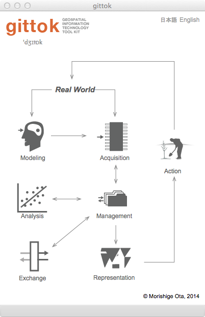
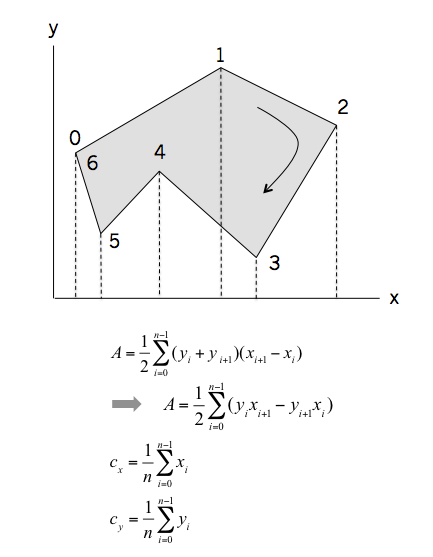
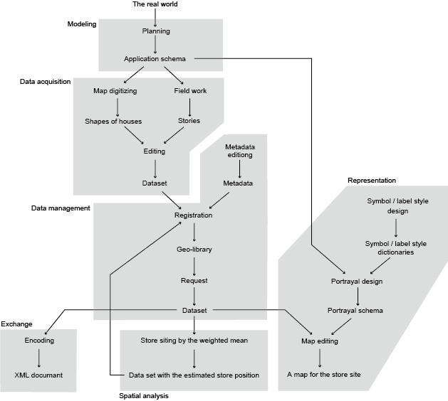

Introduction
Gittok (Geospatial Information Technology Tool Kit, pronouce: jee-tock [ʤiːtɒk]) is a software tool for the introductory course on Geospatial Information Technology. It is provided for undergraduate students and beginners of GIT in industory. Gittok has been developed by Morishige Ota [Kokusai Kogyo Co., Ltd.], a member of GIT Working Group (Leader: Koichi Kubota [Chuo University]) set under the research project "Geospatial Information Sciences Education and Spatial Thinking (Leader: Yasushi Asami [The University of Tokyo], 2009-2013).
It is expected so that the users will understand fundamental knowledge about GIT by studying the instruction now you are reading, and slides provided for classes. And it is possible to use gittok to solve problems relating GIT, if the size of data is small enough. Furthermore, maybe, you will have a mind to develop your own Geographic Information System after studying GIT with gittok.
However, maybe, you wish to know what is Geospatial Information Technology (GIT) before studying this field. It is a set of information technologies regarding geospatial information. Geospatial information is a set of objects as abstraction of real world phemnomena on the earth. Various natural and artificial phenomena occur and cease on the earth every moment. For example, earthquake and typhoon are phenomena happening frequently not only in Japan but also many other countries, and they sometimes give serious impact to our life. Social problems such as population increasing and decreasing, climate and environment change also affect our quality of life seriously. Most of these problems relates to 5W1H (where, when, why, who, what, and how). GIT is an information technology especially emphasizing where and when. Meanwhile, Information Technology(IT) is a technology that conceptualize, acquire, manage, analyze, exchange, and represent information. Therfore, GIT is a set of information technologies for conceptual modeling, acquisition, management, analysis, exchange and representation of geospatial information.
Gittok is a study support software, not a general purpose Geographic Information System (GIS). Gittok cannot apply big amount of data and does not equip wide variety of analysis methods. Instead, the author provids slides and texts to help your GIT learning.
The author (Morishige Ota) releases gittok as an open source free software under the GNU Public License (GPL) Version 3 (source code) and Creative Commons Attribution-NonCommercial-ShareAlike 3.0 Unported (texts and slides).

In this page you will read what is GIT and its simple history at first, then GIT Body of Knowledge the second, and finally, an example how we put Geospatial Information Technology in practice.
GIT and its simple history
The research on Geographic Information System (GIS) started 1960s in Canada and USA and also in Japan a little later. The first Japanese project for acquisition of the national digital geographic information began in 1974.In early stage of the history, life line (telephone, gas, water, sewage) management systems were developed. Next, city planning, road management system were developed to support the central and the local governments. Today, GIS is widely used for life line management, city planning, environmental planning, disaster prevention, security, health care, marketing, store siting, car navigation, location based services for foot passengers, computer games and more.
GIT is a basic technology for the development ofgeospatial applications. .However today, the border between GIT and IT is obscure and geospatial technology is widely used in the information services in our daily life.
GIT Body of Knowledge
You can study six kowledge areas including in theGIT Body of Knowldedge (GIT BoK). They are modeling, data acquisition, data management, spatial analysis, data exchange and representation.

Fig. 1. Gittok title page
Modeling is an abstraction or conceptualization of phenomena in the world. Abstraction is a selection and a simplification of characteristics of phenomena. Abstraction of the real world phenomena is called a feature. Model is a set of features. A feature may associate with other features. A result of the modeling is represented as an application schema. Schema is a formalized description of the model. Application schema is a conceptual schema for data required by one or more applications. In case of gittok, we use the rule of Unified Modelong Language (UML) for the formal description of schemata, because it is used to describe the rules in Geographic Information Standards such as those provided by ISO/TC 211. ISO is an international organization for standardization and it organizes the technical committee 211 for standardization of Geographic Information since 1994.
Data acquisition is to create geospatial data in accordance with the application schema. Dataset is a collection of feature instances. It is called a kit in gittok. Gittok provides a software module called "Editor" and it is used to digitize geospatial data with various attributes such as image, video, sound and web site URL.
Data management is a process of dealing with or controling data. In case of geospatial data, the mechanism called clearinghouse or geo-library is widly used as the Spatial Data Infrastructure (SDI). The goal of this type of data management is to provide access to geospatial data and related online services for data access, visualization, or order through the Internet. For this purpose, metadata (data about data) is used as an index of the data. In case of gittok, you can use stand-alone geolibrary. It means that you can make your own geospatial data library (gio-library) and can access data through metada.
Analysis is a proess to find a substance of phenomena. Spatial analysis is an analysis using location and geometry attributes included in features. There are a lot of methodologies proposed by researchers. So, it is impossible to learn every analysis methods in short period. Gittok provide several simple analysis tools for exercises. However, you can add your mehods in gittok. Because gittok is an opensource free software. You can find the source code in github.
Data exchange is a data communication between different systems. To make commnication, you should use the same language with recievers. In case of gittok, you can translate geospatial data into XML documents.
Representation is the conversion from data to information which meaning or value is undersood by the user. Usually we use a form of maps to represent the information. Gittok provides the software module called "Cartograhper" for designing and editing maps.
An example how to put GIT in practise
We are working for the store siting in the convenience store chain company.we must recommend the location of the new store in the residential area in order to answer the request by the marketing division. How do we select the appropriate location? The process is as follows.
1. Modeling
2. Data acquisition
3. Data management
4. Spatial Analysis
5. Representation
6. Exchange
1. Modeling
The store location should fullfil the following conditions.
1. The place should be lacated at equal distances from houses. If not equal, people living farther from the store feel inconvenience.
2. The houses with bigger buying power should be nearer than others to increase earnings.
These conditions seems to be conflicting. However the first condition is important for consumers and the second is important for the store. How we decide the place?
At first, let's define the coordinate (x, y) as the position of the store, and the coordinate (xi, yi) as the position of each residence (i). Then (di) the distance between the store and the house is,
di = sqrt((x - xi)^2 + (y - yi)^2)
here, sqrt: square root, ^2: square
You can get a position of the store to be average distance from each regidences. But such a position does not fullfil the second condition. To fullfil the second condition, we can give weight (wi) that indicates the buying power of each house. The weight is used as the coefficient of the distance. It means,
di = wi * sqrt((x - xi)^2 + (y - yi)^2)
You can get (x, y) where the summation (sum) of (di) becomes the minimum (min).
sum (di | i = 1...n) → min
However we will get the position by di^2 becouse the square root makes the problem more complex.
sum(di^2 | i = 1...n) → min
The derivative of x and derivetive of y are both zero at the minimum position.
sum (wi^2 * 2 * (x - xi)) = 0
sum (wi^2 * 2 * (y - yi)) = 0
By chenging these equations,
x = sum (wi^2 * xi) / sum (wi^2)
y = sum (wi^2 * yi) / sum (wi^2)
These equations are called weighted averages. Generaly, equations and argorithms to represent phenomena and things are called mathematical models. Now we provided the mathematical model in order to solve the real world problem.
Now, how do we get the weights? The direct investigation of buying power is very difficultt, because it is a matter of privacy. However, if you have a large scale map around the target area, you can digitize the shape of buildings, and you can calculate the area of the shape. And may be you can observe the stories of buildings from the street.This is called a field work. If you can estimate the areas and stories of buildings, you can estimate the gross floor area (GFA) of buildings. And if we may say that the buying power is proportional to GFA, it can be used as the weight.
However is this really OK? We should consider that there are not only residential houses in buildings but also there are office buildings. The density of the population accommodated at the respective buildings is different. According to the statistics of Tokyo Japan (March, 2015), density of daytime population in Shinjuku ward is predicted that 40441.7 /km2 and a day-time vs. night-time population ratio is 220.1%.
It means, the number of people staying in office building is 2.2 times larger than residence of the same area. We can estimate the purchasing power of office buildings is more than 2 times as large as the residences. Therefore, let multiply the area of building by the day-time vs. night-time population ratio.
As a consequence, we can get the position of the store by applying the equation of the weighted average and we can use the modified GFA as the weight. However, convenience store siting in practice is more complicated, because competitive store distribution and the rational logistics should also be considered.
2. Data acquisition
We need to digitize the shapes of houses drawn on a large scale mapthat covers the envisaged trade area. Usually we can digitize shapes of houses shown in the map displayed on a personal computer screen. A shape of the house is a polygon. And you can get an area (A) and a centroid (cx, cy) of the polygon by the method shown under.

Fig. 2. The method to get an area (A) and a centroid (cx, cy) of a polygon
You may think (cx, cy) is a representative position of a house.
By the way, The data we construct can be used not only for the store siting, but also the customer management after the store will be located. It means that we need to keep and manage the data systematically.
3. Data management
The data diitized now has coordinates releted to the position on the earth. Such a data is called geospatial data. If you want to manage geospatial data systematically, you should make a metadata. According to the definition provided by ISO (ISO 19115: 2014), It is 'information about a resource’ . It works as an index of the data in the geo-library. A geo-library consists of a folder in which metadatas are stored and a collection of geospatial data. You will be able to request the geo-library to get data you need using metadata.
4. Spatial analysis
Spatial analysis in this case is to get the position of the store. After we made a geospatial data, we can apply an operation to get the appropriate store position. The result will be merged in the dataset.
5. Representation
In most case, we draw a map to show the result of the spatial analysis. For example, even if you recieve a coordinate, its location has to be indicated on the map. Otherwise it is difficult to understand where it is. To draw a map you need to think of the design to make it easier to understand. The design rules are described as the portrayal schema. It consists of symbol styles, label styles and data to explain the correpondence between symbol or label and feature attribute. You will be able to design a map to show the store siting plan by using gittok.
6. Exchange
Geospatial data are transfered to other people in order to reply their requests. The data format should be understandable to the reciervers. Usually we use the commonly accepted format such as XML. Gittok can encode almost all data such as application schema, kit, metadata, and protrayal schema as human readable XML documents. The rules of data structure are explained slides and texts.
Figure 3 describes the data flow of store siting from realorld to the map to show the recommended place of the store.

Fig. 3. The work flow diagram for the store siting
Now you can start the studies and exercises of GIT with gittok. Good luck!
Top page of gittok
BUTTONS
Each pictgram (icon) works as a button. You can open the page by clicking the pictgram.
日本語
今あなたが読んでいるドキュメントが表示されます．
English
You can read this page.